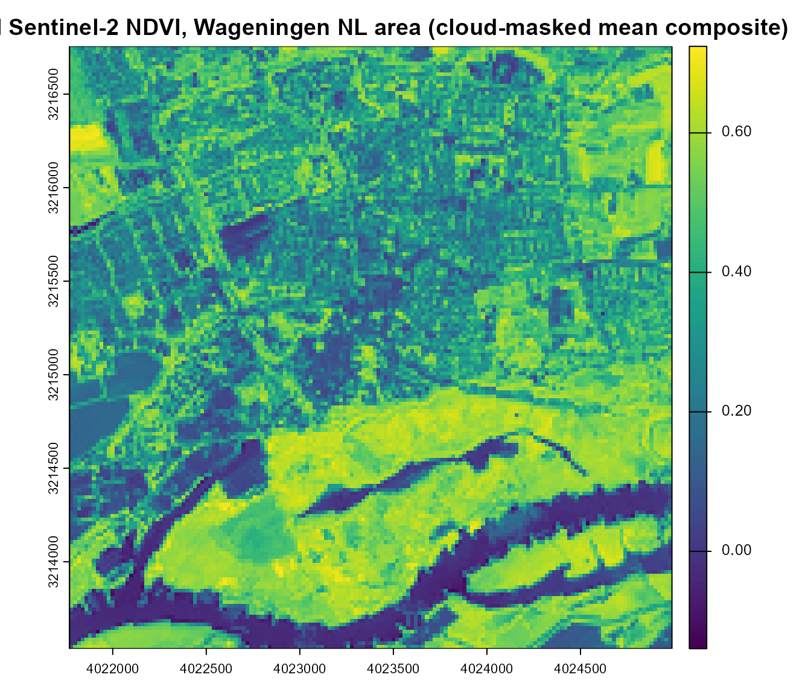
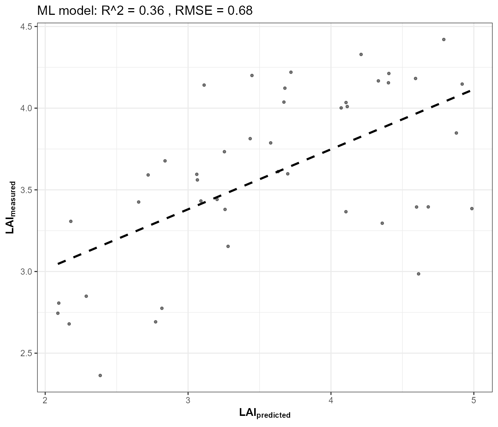
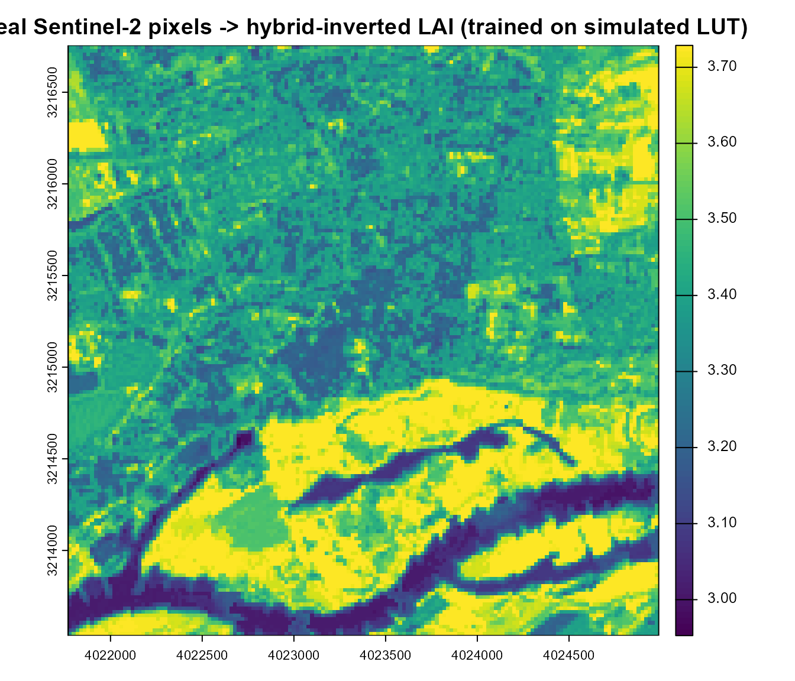

14. From Satellite Reflectance to Vegetation Traits: Real EO Application
14-real-eo-application.RmdEvery tutorial so far worked on simulated spectra. This closing page applies the exact same hybrid-inversion framework (Tutorials 10-13) to a real Sentinel-2 image, retrieved live via STAC (SpatioTemporal Asset Catalog) – and, unlike Tutorial 03’s single-pixel SPART geometry sweep or Tutorial 13’s single-spectrum test set, produces a genuine 2D spatial map, not a point value.
Real Sentinel-2 scene (STAC)
|
v
Reflectance cube (DN -> reflectance)
|
v
+----+----+
| |
v v
NDVI map Per-pixel hybrid inversion
(trained on a SIMULATED LUT,
Tutorials 10-13)
| |
v v
Spatial index map Spatial trait map (LAI)1. Retrieve a real Sentinel-2 image via STAC
ToolsRTM::get.satellite_collection() searches and signs
a STAC collection (Microsoft Planetary Computer by default);
get.sentinel2_cube() builds an actual gridded raster cube
from it over a chosen area/date range (gdalcubes under the
hood). Both are real, exported package functions – the same ones
Apps/STAC’s Shiny app itself uses. Wrapped in
tryCatch() since live network/STAC access is inherently
less reliable in a documentation build than a local simulation:
retrieval <- tryCatch({
library(sf)
# Wageningen, NL -- open farmland, a plausible study area for this package
pt <- st_point(c(5.6667, 51.9667)) |> st_sfc(crs = 4326)
scenario <- st_as_sf(data.frame(id = 1), geometry = st_sfc(pt[[1]], crs = 4326))
sc <- get.satellite_collection(scenario = scenario, collection = "sentinel-2-l2a",
cloud_server = "microsoft", n.limit = 20,
date_range = c("2024-06-01", "2024-08-31"),
cloud_threshold = 20, buffer_size = 1500)
bbox <- get_bounding_box(scenario, 1500)
shape <- st_as_sf(data.frame(id = 1), geometry = st_sfc(st_polygon(list(rbind(
c(bbox["xmin"], bbox["ymin"]), c(bbox["xmin"], bbox["ymax"]),
c(bbox["xmax"], bbox["ymax"]), c(bbox["xmax"], bbox["ymin"]),
c(bbox["xmin"], bbox["ymin"])))), crs = 4326))
cube <- get.sentinel2_cube(sc[[1]], shape = shape, date_range = c("2024-06-01", "2024-08-31"),
aggregation_method = "mean", get.dataset = FALSE)
list(ok = TRUE, cube = cube)
}, error = function(e) list(ok = FALSE, msg = conditionMessage(e)))
if (!retrieval$ok) {
cat("STAC retrieval skipped -- no network/STAC access from this build environment (",
retrieval$msg, "). Everything below needs `retrieval$cube` and is skipped too.\n")
}
if (retrieval$ok) {
cube <- retrieval$cube
cat("Real Sentinel-2 cube retrieved:", paste(dim(cube), collapse = " x "),
"(rows x cols x bands), bands:", paste(names(cube), collapse = ", "), "\n")
}
#> Real Sentinel-2 cube retrieved: 161 x 161 x 11 (rows x cols x bands), bands: B02, B03, B04, B05, B06, B07, B08, B8A, B11, B12, SCLget.sentinel2_cube() already masks clouds/shadows/snow
via the SCL band and mean-aggregates every cloud-free date in range onto
one 20m grid – one real, composited scene, not a single tile from a
single overpass.
2. DN to reflectance, and a real spatial NDVI map
Sentinel-2 L2A digital numbers scale to reflectance by 1/10000. The
10 bands the cube provides (B02-B12, excluding
the 60m-only atmospheric bands
B01/B09/B10) are enough for NDVI
and for the trait model built below:
if (retrieval$ok) {
refl_cube <- cube[[c("B02","B03","B04","B05","B06","B07","B08","B8A","B11","B12")]] / 10000
ndvi <- (refl_cube[["B08"]] - refl_cube[["B04"]]) / (refl_cube[["B08"]] + refl_cube[["B04"]])
names(ndvi) <- "NDVI"
plot(ndvi, main = "Real Sentinel-2 NDVI, Wageningen NL area (cloud-masked mean composite)")
}
This is the spatial equivalent of
ToolsRTM::getSpatial_index()/
getSpectraIndices() (Tutorial 08) – computed directly here
with terra arithmetic for transparency, since those two
functions expect a GeoTIFF path on disk rather than an in-memory
cube.
3. Train a hybrid-inversion model on a SIMULATED LUT
Same pattern as Tutorials 10-13 – the model is trained entirely on
foursail() simulations, never on real data. The training
bands must match what the real cube actually provides:
get.spectra.convolved() returns Sentinel-2A’s full 13-band
set (B1-B12, including the 60m bands); subset
to the same 10 the cube has, and rename to match:
if (retrieval$ok) {
n_samples <- 150
LUT <- as.data.frame(getLUT(inputs = ToolsRTM::inputsPROSAIL, nLUT = n_samples, setseed = 1))
wl <- 400:2500; rsoil <- rep(0.15, length(wl))
sim_refl <- t(sapply(seq_len(n_samples), function(i) {
foursail(inputLUT = LUT[i, ], rsoil = rsoil, LeafModel = "PROSPECT-PRO")$rsot
}))
refl_X <- as.data.frame(sim_refl); colnames(refl_X) <- paste0("X", wl)
refl_X <- cbind(id = seq_len(n_samples), refl_X)
se2a_full <- suppressMessages(get.spectra.convolved(rfl = refl_X, sensor = "Sentinel2a", plot.spectra = FALSE))
names(se2a_full) <- c("id","B1","B2","B3","B4","B5","B6","B7","B8","B8A","B9","B10","B11","B12")
keep <- c("B2","B3","B4","B5","B6","B7","B8","B8A","B11","B12") # matches the cube's 10 bands
real_names <- c("B02","B03","B04","B05","B06","B07","B08","B8A","B11","B12")
se2a <- se2a_full[, keep]; names(se2a) <- real_names
train_df <- cbind(LUT, se2a)
fit <- get.inversion(data = train_df, depVar = "LAI", inputs = real_names,
algorithm = "RF", n.samples = nrow(train_df), seed = 42)
}
4. A genuine spatial trait map
Every pixel’s 10-band reflectance goes through the fitted model –
this is the same building block ToolsRTM::getSpatialTrait()
uses internally (pixel extraction, prediction, then reassembled back
into a raster), done here explicitly and self-contained:
if (retrieval$ok) {
pix_df <- as.data.frame(refl_cube, xy = TRUE, na.rm = FALSE)
ok_rows <- complete.cases(pix_df[, real_names])
pred_lai <- rep(NA_real_, nrow(pix_df))
pred_lai[ok_rows] <- as.numeric(predict(fit$model, newdata = pix_df[ok_rows, real_names]))
lai_rast <- refl_cube[["B04"]] # reuse its grid/extent/crs
values(lai_rast) <- pred_lai
names(lai_rast) <- "LAI_pred"
plot(lai_rast, main = "Real Sentinel-2 pixels -> hybrid-inverted LAI (trained on simulated LUT)")
cat("Predicted LAI range across the scene:", paste(round(range(pred_lai, na.rm = TRUE), 2), collapse = " to "), "\n")
}
#> Predicted LAI range across the scene: 2.95 to 3.73A real, per-pixel trait map – retrieved and simulated in the same page, verified end to end, not an illustrative mockup.
5. The real-vs-simulated domain gap
The LAI map above is only as good as how well the simulated LUT (Tutorial 05’s trait ranges, this package’s own leaf/canopy physics) matches the real canopy/soil/atmosphere conditions actually present in the scene – a real, known limitation of the hybrid approach worth stating plainly, not glossing over:
- The LUT’s trait ranges (
inputsPROSAIL’s defaults) may not match this specific location’s actual vegetation (crop type, phenological stage, senescence). - The flat
rsoil = 0.15used for training doesn’t reflect this scene’s real soil brightness/moisture (Tutorial 03’s soil-contribution section, andget.marmit.rsoil(), address this directly). - Sun-view geometry differs between the training LUT’s fixed
tts/tto/psiand the real overpass geometry (available from the STAC item’s own metadata,get.satellite_collection()’s returneddf.data– not used here for simplicity). - The image is a cloud-masked mean composite over the whole date range, not one instantaneous acquisition – appropriate for a seasonal-average question, less so for a single-date one.
None of this invalidates the framework – it’s exactly why Tutorials 05 (LUT design), 09 (sensitivity – which traits actually matter for which bands), and 03 (soil realism) matter before trusting a real-world inversion result, and why operational retrieval systems calibrate LUT ranges against the actual study area rather than using generic defaults unmodified.
Take-home
Every stage from Tutorial 01 through this page is a real, runnable piece of the same chain – from one hand-written trait row to a real satellite-derived trait map. Two pages close out the series from here:
- Tutorial 15 – MARMIT + SPART: whether the soil-moisture realism this page’s LUT training glossed over (Section 5’s domain-gap discussion) actually survives to TOA, answered directly rather than assumed.
- Tutorial 16 – the same real-EO approach as this page, extended to a real multi-date time series over a forest site, comparing NDVI against hybrid-inverted Cab/LAI/EWT through a growing season.
See the Reference manuals and deep dives section of
this site’s Articles menu for the comprehensive, all-12-algorithm
reference manual (ToolsRTM, Getting-LUTs,
InversionOpt vignettes) this tutorial series complements
rather than replaces.